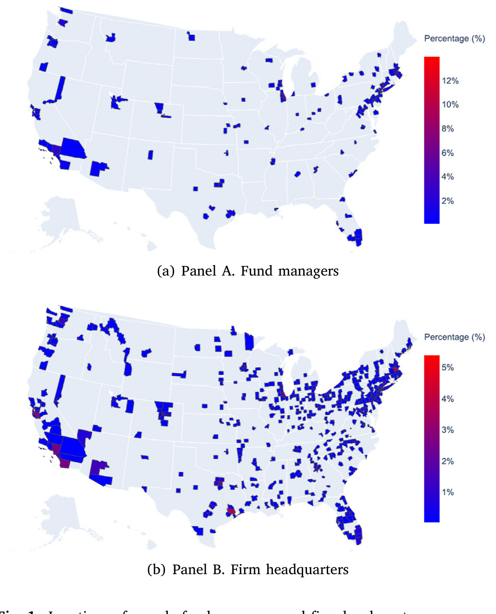
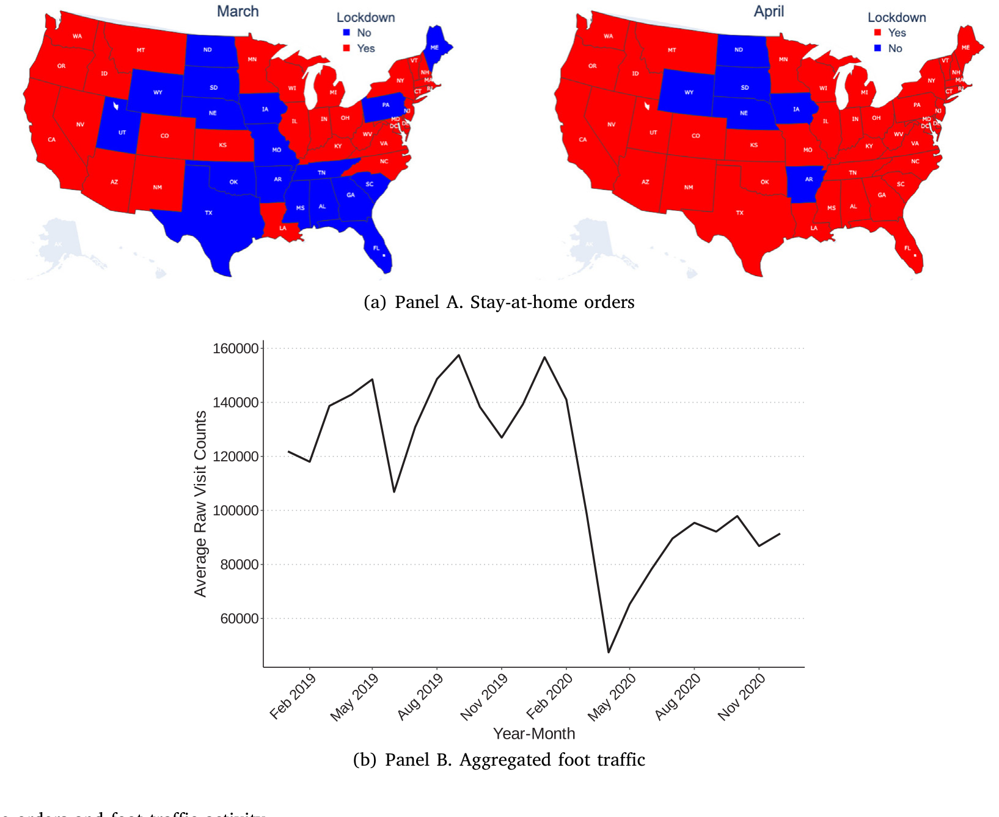
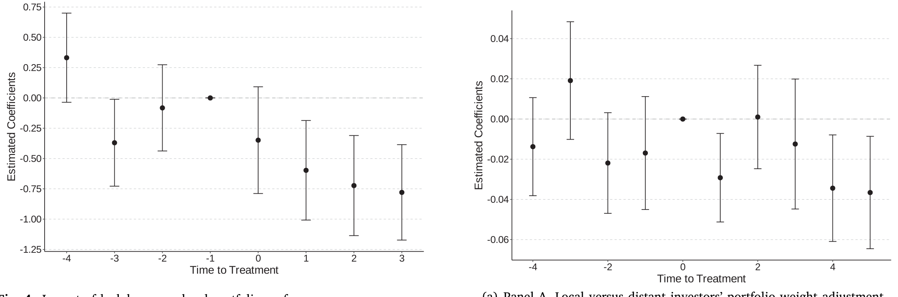
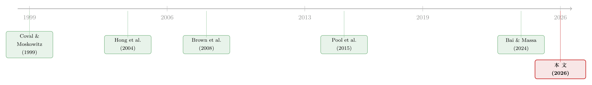

见面，还重要吗？——把「线下社交」从「地理临近」里剥离出来
本文读的是 Lee (2026, Journal of Financial Economics)：作者用 COVID-19 封城作为对「面对面接触」的一次外生冲击，证明当线下见面被切断时，基金经理在本地股票上的择时能力相对远地股票显著恶化——这种恶化不是因为本地公司基本面变差，而是软信息的传递通道被掐断了。背后有两条机制：建立信任让难以编码的软信息得以流动，印象管理让「好消息」被优先传递出来。
1 引言：一个被疫情意外回答的老问题
地理上离得近，能带来信息优势——这几乎是公司金融里一条被反复验证的「常识」。Coval 和 Moskowitz (1999, 2001) 发现基金经理在本地股票上赚得更多，Hong、Kubik 和 Stein (2004) 说股市参与会「传染」，Pool、Stoffman 和 Yonker (2015) 干脆把基金经理的邻居拉进来，证明同一个社区里的人持仓会趋同。一条线索越来越清晰：社会互动 (social interactions) 是临近优势的核心来源。
但这里其实藏着一个一直没被回答干净的问题：互动的「形式」要紧吗？ 更具体地说——在 Zoom、电话会议、即时通讯已经无处不在的今天，面对面 (face-to-face, F2F) 这件事本身，还提供什么不可替代的东西吗？
这个问题之所以难，是因为过去的研究几乎都用「地理临近」来当「社会互动」的代理变量。可临近本身是个脏变量：它既可能捕捉到见面的频率，也可能裹挟着投资者技能、风险偏好、资源禀赋这些不随时间变化的遗漏变量。更麻烦的是，在通讯技术发达的今天，「住得近」捕捉的是全部互动强度（电话、邮件、视频统统算上），根本没法把「面对面」这一条单独拎出来。
换句话说：你看到「本地基金赚得多」，到底是因为他们见过面，还是因为他们本来就更聪明、资源更好？地理临近这把尺子，量不出这个区别。
接着，一个自然的问题是：有没有什么办法，能在保持地理临近不变的前提下，单独地、外生地、突然地，把「面对面」这一个通道关掉？
2020 年初的 COVID-19 给了一个谁也没料到的答案。
2 识别策略：把「临近」和「见面」掰成两个维度
封城（stay-at-home orders）的妙处在于，它在时间序列上制造了面对面接触的剧烈变化——人们突然被关在家里远程办公；而地理临近这个横截面变量在冲击期间是固定不动的。把两者交叉起来，就得到了一个干净的 双重差分 (difference-in-differences, DiD) 设计：比较封城前后，本地投资相对远地投资的表现变化。
但真正关键的一步在于怎么定义「本地」。以往研究往往用基金管理公司总部的地址，可负责日常买卖决策的基金经理，常常并不坐在总部。作者于是手工活儿做到底：从 LexisNexis 公共记录数据库 (LexisNexis Public Records Database, LNPRD) 里挖出每位经理的确切居住地，再用 LinkedIn 个人资料交叉核对。沿用文献惯例，凡总部在基金 ZIP 区码 100 英里以内的股票，记为「本地」。

Figure 1: Locations of sample fund managers and firm headquarters
然后，作者用了三个互相印证的「面对面被切断」的度量：(1) 封城令本身；(2) SafeGraph 的人流数据——它基于移动设备信号追踪全美 360 万个商业兴趣点的到访，2020 年 3、4、5 月人流分别比 2019 年平均下降了 25%、62%、50%，作者把「下降 50% 以上」定义为高度中断；(3) 县级 COVID 确诊数，作为人们主动回避线下接触的代理。

Figure 2: Stay-at-home orders and foot traffic activity
可这里有一个绕不过去的识别担忧：本地组合和远地组合的股票构成本来就不同。万一封城地区的本地公司经营状况也更糟，那么本地组合表现差，可能只是因为这些公司的基本面恶化了，而跟「基金经理见不了面、择时变差」毫无关系。
于是论文里最漂亮的一招出现了。作者不去比「本地组合 vs 远地组合的收益」，而是把镜头怼到同一只股票上：对同一只股票，比较本地基金和远地基金在封城前后调整持仓权重的差异，并放进 股票×时间固定效应 (Stock×Time fixed effects)。这组固定效应会吸收掉所有随时间变化的、股票层面的特征——包括封城带来的基本面变化。剩下能被识别出来的，就只有面对同一价格变化时，本地与远地投资者择时行为的差别。基本面这条替代解释，被固定效应直接「吃掉」了。
3 数据：把基金经理一个个「定位」到 ZIP 码
样本来自 CRSP 免存活偏误共同基金数据库 (CRSP Survivor-Bias-Free Mutual Fund database) 与 Morningstar，限定美国股票型基金，按 3×3 的规模×价值风格筛选，剔除指数基金、ETF、行业基金、国际基金等，并要求基金持有 20–500 只证券、股票仓位过半。最终得到 1064 只有独立组合的基金；股票端经 CRSP 与 Compustat 匹配后剩 2983 家公司。样本期为 2019 年 1 月至 2020 年 12 月，正好罩住人们最避免物理接触的疫情早期。持仓数据按月前向填充，所有连续变量在 1% 水平缩尾。
值得一提的是定位的成功率：作者为 69% 的样本基金找到了经理的居住 ZIP 码，其余用 LinkedIn 上的区域办公室地址补齐；超过 25% 的基金对应多个地点，平均每只基金关联 1.7 个城市。（关于共同基金数据本身的口径，可参见《Mutual Fund》。）
4 主要结果：见不了面，本地组合就「失准」了
第一步，组合层面的证据。 封城令落地后，本地组合的月度基准调整收益与 DGTW 调整收益（Daniel et al., 1997），平均比远地组合低 0.2–0.4 个百分点（相对封城前）。这个数字看着小，但封城前本地组合平均规模 $277 百万，0.4 个百分点的月度收益下滑，折算成年化，相当于每只基金每年损失约 $13.3 百万。
第二步，落到择时上。 用前面那套 Stock×Time 固定效应：对同一只股票，每当股价上涨一个单位，本地基金加仓的幅度比远地基金少 0.02 个百分点（相对封城前）。换句话说，本地基金在「该加仓时」变得迟钝了。这种迟钝在随后的收益里也看得见——本地仓位权重每多 1 个百分点，随后三个月的异常收益就比远地仓位低 1.3–1.5 个百分点（相对封城前）。

Figure 4: Impact of lockdowns on local portfolio performance
把这两步连起来看，故事就完整了：封城切断面对面接触 → 本地基金对本地公司的信息变得迟钝 → 择时变差 → 本地组合表现下滑。而且这个下滑不是因为本地公司基本面变糟（那已被固定效应吸收），而是信息通道出了问题。
5 机制：信任与印象管理，两条软信息的暗渠
如果真是「信息通道」被掐断，那到底是哪种信息、为什么非得见面才能传？作者提出两条互补的机制。
机制一：建立信任 (trust-building)。 软信息 (soft information)——那些难以编码、主观、需要共同语境才能传递的判断性信息——的流动，高度依赖信任 (Levin and Cross, 2004)。而信任恰恰最依赖面对面：表情、语气、眼神、肢体语言这些非言语线索，配合「社会临场感」，是建立信任最高效的场景。
怎么度量信任？作者借用了金融学里成熟的流行病学式 (epidemiological) 方法：移民的后代会保留祖先的文化特质与信念。他用 NamSor 接口从经理的姓氏推断其祖籍国，再用 Eurobarometer 的国家对信任评分（Guiso, Sapienza and Zingales, 2009 同源数据）构造出基金—公司层面的「信任距离 (trust distance)」。结果很干净：信任距离每上升一个标准差，本地相对远地投资的下一期异常收益就低 0.79 个百分点（每单位组合权重、相对封城前）。而且对持有期更短的「基金—股票对」更明显——信息不对称越严重的地方，面对面越要紧。这正好印证了假设 1：失去面对面通道的伤害，对信任水平本就低的公司—经理对更严重。这一结果在控制了共同文化、教育、种族、性别之后依然稳健。
机制二：印象管理 (impression management)。 人在社交中倾向于「把自己最好的一面摆出来」(Leary and Kowalski, 1990)，选择性地传递对自己有利的信息。这对基金经理格外重要——他们受卖空约束，正面信息更可操作；公司高管也有强烈动机优先释放好消息（Noe, 1999；Nagar et al., 2003；Hermalin and Weisbach, 2007）。而面对面，恰恰是高管「在不违反披露规则的前提下强化正面叙事」的理想场景。
这条机制有一个非常锐利的可证伪含义：如果面对面主要在传递好消息，那么失去它应该更多地损害买入决策，而非卖出。数据正中靶心——择时恶化主要出现在买单而非卖单上（假设 2 成立）；并且对那些 CEO 薪酬业绩敏感度（delta，按 Core and Guay, 2002 计算）更高的公司更明显——这些高管的报酬与「被感知到的业绩」绑得更紧，因而更有动力做印象管理、递送利好。
6 排除替代解释：是不是别的什么在作怪？
一个好的实证故事，要经得起「会不会是别的原因」的反复追问。
会不会是基金内部的信息流变了？ 比如基金家族内部本来就有信息共享，封城只是改变了内部沟通。作者检验后认为这不能完整解释结果。会不会是大家转而更多地用公开信息？ 同样不足以解释。会不会只是交易强度下降了？ 作者发现封城后基金的 Active share（Cremers and Petajisto, 2009）确实下降、更贴近基准，但换手率、交易规模、新建仓比例都没掉——说明基金仍在积极交易，结果并非「交易变懒」所致。此外，Coval and Moskowitz (2001) 的本地超配度量在基金间的离散度收窄了，进一步说明面对面通道确实在塑造本地投资决策。
最后是两组异质性：效应在信息环境更不透明的公司、以及社会特征更强的地区更明显——前者说明面对面在「越缺乏公开信息」处越珍贵，后者说明被切断的既有正式会议、也有非正式接触。
7 文献脉络：从「住得近」到「见过面」
把这条研究脉络捋一捋，会看到一条清晰的收敛路径。
最早，人们关注的是地理：Coval 和 Moskowitz (1999, 2001) 立起「本地优势」这面旗。接着，研究重心从「地理」转向「社会」：Hong、Kubik 和 Stein (2004) 用社会互动解释股市参与，Brown 等 (2008) 用社区因果效应、Pool、Stoffman 和 Yonker (2015) 用邻里关系，一步步把「人和人的连接」做实为信息优势的来源。

然后，COVID 把「互动」这件事推到了聚光灯下。与本文最近的是 Bai 和 Massa (2024)，他们同样用疫情检验了基金在临近股票上的表现，得到「人际互动不可替代」的结论。但本文在两点上更进一步：第一，它用基金经理的精确位置和择时分析提供了因果证据，而非停留在总部层面的相关性；第二，它不满足于「面对面有用」，而是搭起一个概念框架，把面对面之所以独特的两条机制——信任与印象管理——拆开来、分别检验。这正是它在这条脉络里的位置：从「证明社交重要」走向「解释面对面为什么不可替代」。
评论与延伸（Q&A + 研究方向）
(a) 几个可能的疑问
Q：把 COVID 封城当「外生冲击」，真的干净吗？封城地区的本地公司基本面不也一起变差了？
这恰恰是论文设计最用力的地方。组合层面的结果确实有这个隐忧，所以作者引入了股票×时间固定效应：在同一只股票上比较本地与远地基金的择时差异，把所有随时间变化的股票层面冲击（包括基本面恶化）全部吸收掉。剩下被识别的，只能是「面对同样的价格，本地 vs 远地谁反应更准」，基本面这条路径被堵死了。
Q：「信任距离」用姓氏推祖籍、再配国家对信任评分，会不会太粗糙？
它度量的是广义信任 (generalized trust)——在个性化信任尚未通过反复接触建立起来之前占主导的那部分基线信任 (Bordalo et al., 2016)。这正是「失去面对面」最该咬住的对象：当双方还没混熟、信息不对称又高时，面对面建立信任的价值最大。而且结果在控制了共同文化、教育、种族、性别后依然稳健，说明它捕捉的不是单纯的「同族裔」效应。
Q：买单比卖单受影响更大，会不会只是因为基金本来就受卖空约束、卖的动作就少？
卖空约束确实是机制的一部分，但作者的逻辑是反过来用它的：正因为正面信息更「可操作」、而面对面又偏向传递利好（印象管理），所以失去面对面理应更伤买入决策。更有说服力的是 CEO delta 那条横截面——高管报酬越绑业绩，买单择时恶化越明显，这是单纯卖空约束解释不了的。
Q：会不会只是封城后大家交易变少、变保守，所以「看起来」择时差？
作者专门查了交易强度：Active share 确实降了（更贴基准），但换手率、交易规模、新建仓比例都没掉。基金仍在积极买卖，只是「买得不准」了。所以不是「交易变懒」，而是「信息变钝」。
Q：这和 Bai 和 Massa (2024) 到底差在哪？
两者结论方向一致——面对面不可替代。但 Bai-Massa 用的是基金公司总部位置和基金层面的平均持有距离，本文则定位到经理本人、并做择时分析，因而能给出因果身份；更重要的是，本文把「为什么不可替代」拆成信任与印象管理两条可检验的机制，而不只是记录一个相关性。
Q：疫情是个极端事件，这个结论能外推到平常日子吗？
这是所有「自然实验」类研究的共同软肋。封城是一次剧烈而短暂的中断，它能识别出面对面的因果价值，但量级未必能照搬到正常时期——平时人们有大量替代沟通渠道，边际损失可能没这么大。把它理解为「面对面价值的一次上界式曝光」更稳妥。
(b) 几个可能的研究问题与提案
1. 把这套识别搬到公司债/信用市场。 【经济故事】公司债是典型的「软信息密集 + OTC 关系驱动」市场，交易员与发行人、与做市商的面对面接触可能比股票更关键。封城若切断这些接触，本地债券持有人的择时与流动性供给会不会更明显地恶化？ 【可行性】中。债券持仓可用 eMAXX/NAIC，交易用 TRACE，机构位置仍可用 LNPRD 思路定位；难点在于债券「本地」的定义和择时度量比股票噪声大。
2. 外资持有人 vs 本土持有人，谁更依赖面对面？ 【经济故事】跨境投资者本就面临更高的信任距离和信息不对称。封城同时切断了跨境差旅与本地接触，可比较「外资—本土」在同一标的上的择时分化，直接检验信任距离机制在国际维度的延伸。 【可行性】中。需 FactSet/Morningstar 的国别持仓数据 + 本文的信任距离构造；识别上可叠加各国封城时点的差异做更丰富的 DiD。
3. 面对面被切断，对二级市场流动性的冲击。 【经济故事】若做市商与客户、与发行人的软信息靠面对面维系，封城可能拉大本地标的的买卖价差、降低深度。这把「信息渠道」与「流动性供给」直接挂钩。 【可行性】高。日内价差/深度数据成熟（TAQ、TRACE），把「本地做市」与封城强度交叉即可；挑战在于分离做市商的库存风险渠道与信息渠道。
4. 个性化信任 vs 广义信任的动态替代。 【经济故事】本文抓的是广义信任（关系尚浅时）。一个自然延伸是：对长期持有、反复接触的基金—公司对，封城的伤害是否更小？因为个性化信任已经攒够了，面对面的边际价值递减。 【可行性】高。用持有期长度做横截面分组即可，本文已有持有期更短效应更强的暗示，可正式做成主结果。
参考文献
Bai, J., Massa, M. (2024). Is human-interaction-based information substitutable? Evidence from the COVID-19 pandemic. Georgetown McDonough School of Business Research Paper No. 3843782.
Brown, J.R., Ivković, Z., Smith, P.A., Weisbenner, S. (2008). Neighbors matter: Causal community effects and stock market participation. Journal of Finance 63(3), 1509–1531.
Core, J., Guay, W. (2002). Estimating the value of employee stock option portfolios and their sensitivities to price and volatility. Journal of Accounting Research 40(3), 613–630.
Coval, J.D., Moskowitz, T.J. (1999). Home bias at home: Local equity preference in domestic portfolios. Journal of Finance 54(6), 2045–2073.
Coval, J.D., Moskowitz, T.J. (2001). The geography of investment: Informed trading and asset prices. Journal of Political Economy 109(4), 811–841.
Cremers, K.J.M., Petajisto, A. (2009). How active is your fund manager? A new measure that predicts performance. Review of Financial Studies 22(9), 3329–3365.
Daniel, K., Grinblatt, M., Titman, S., Wermers, R. (1997). Measuring mutual fund performance with characteristic-based benchmarks. Journal of Finance 52(3), 1035–1058.
Guiso, L., Sapienza, P., Zingales, L. (2009). Cultural biases in economic exchange? Quarterly Journal of Economics 124(3), 1095–1131.
Hall, J.A., Horgan, T.G., Murphy, N.A. (2019). Nonverbal communication. Annual Review of Psychology 70, 271–294.
Hong, H., Kubik, J.D., Stein, J.C. (2004). Social interaction and stock-market participation. Journal of Finance 59(1), 137–163.
Leary, M.R., Kowalski, R.M. (1990). Impression management: A literature review and two-component model. Psychological Bulletin 107(1), 34–47.
Pool, V.K., Stoffman, N., Yonker, S.E. (2015). The people in your neighborhood: Social interactions and mutual fund portfolios. Journal of Finance 70(6), 2679–2732.